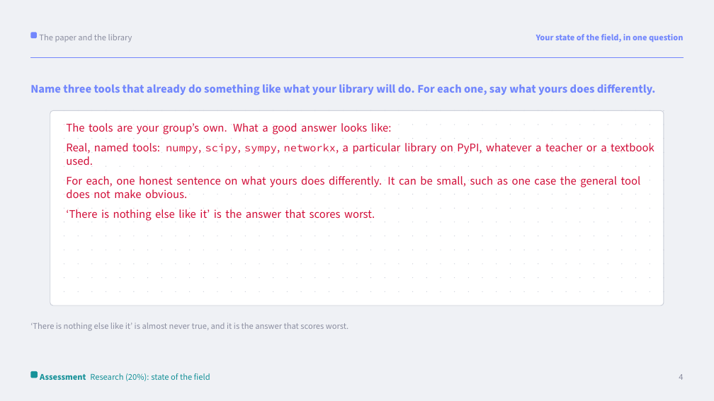
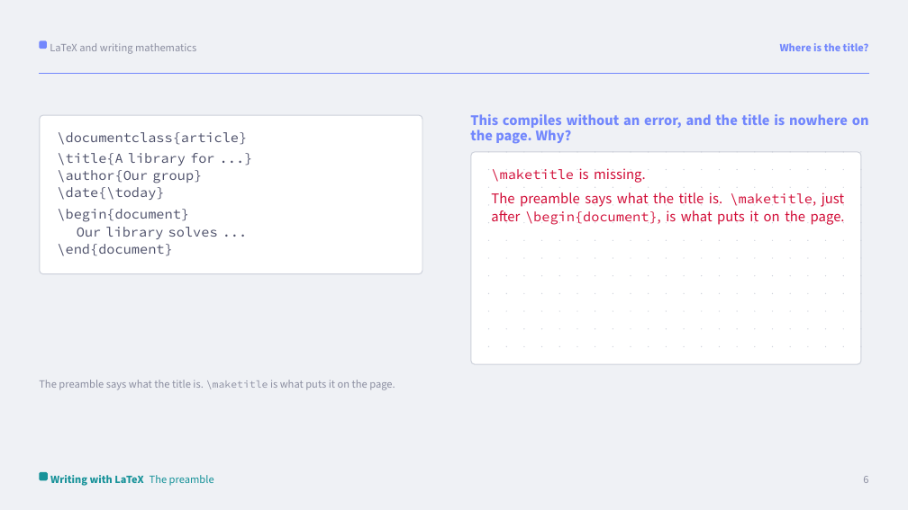
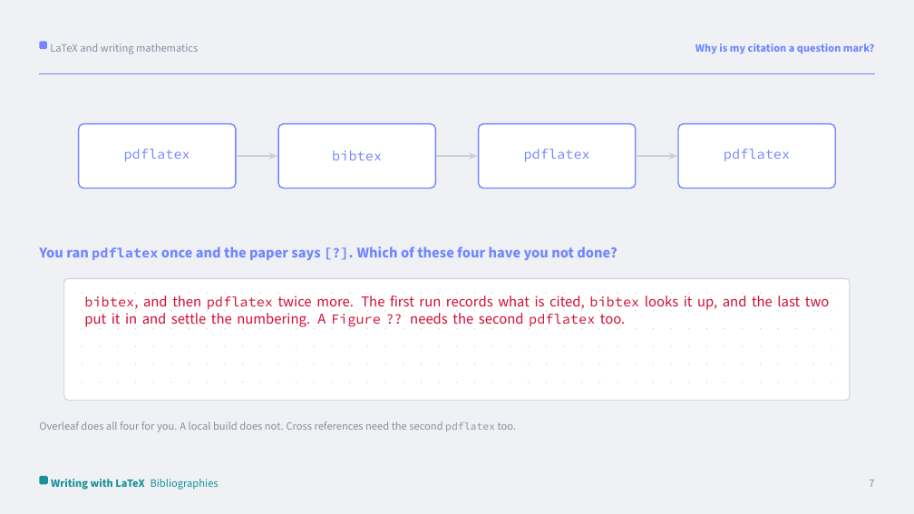
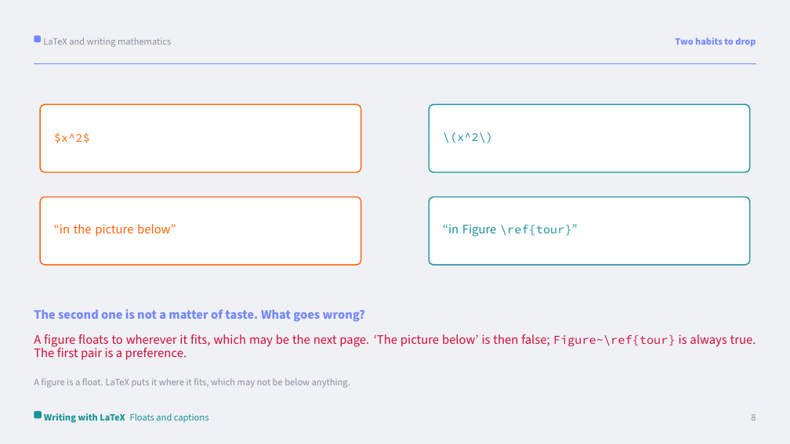
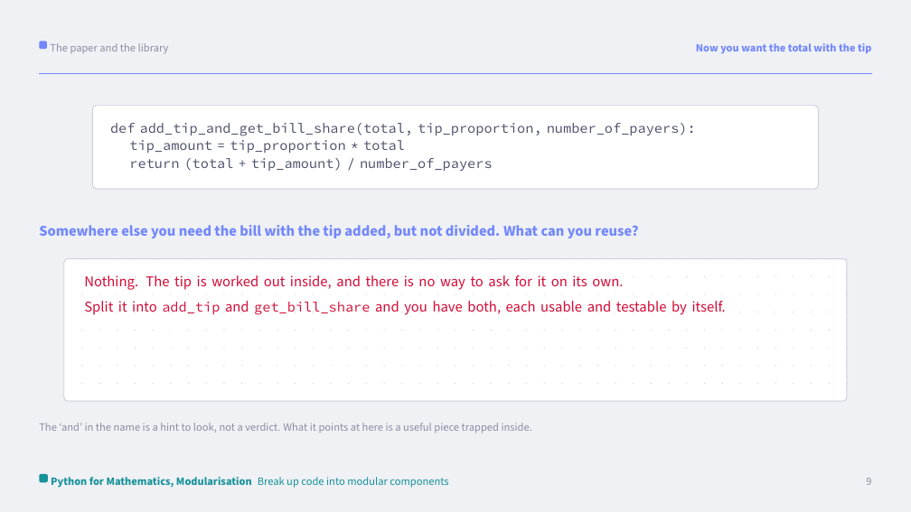

LaTeX and Writing Mathematics
Run sheet
One row per slide, to glance at while the deck is on screen. The reasoning behind every answer is in the sections below. Deck: /deck/latex-and-writing-mathematics/main.pdf.
| Slide | On screen | What you fill in or say |
|---|---|---|
| 2 | This hour is not a LaTeX lecture | The librarian has the hour; the notes are theirs to work through. Hand over after slide 4 |
| 3 | Research is 20% of the project mark | Two things only: state of the field, and references |
| 4 | Your state of the field, in one question | Push for named tools: numpy, scipy, sympy, something on PyPI. 'There is nothing else like it' is the answer that scores worst |
| 5 | This week's reading | The LaTeX notes, and the modularisation chapter |
| 6 | Where is the title? | \maketitle is missing. The preamble says what the title is; \maketitle puts it on the page |
| 7 | Why is my citation a question mark? | pdflatex, bibtex, pdflatex, pdflatex. Overleaf does all four, a local install does not. Same answer for a Figure ?? |
| 8 | Two habits to drop | The first is a preference. The second is not: a figure is a float, so 'the picture below' is sometimes false and Figure~\ref{...} never is |
| 9 | Name this function without using 'and' | Two functions: add_tip and get_bill_share. The rule is testable on its own and nameable without 'and', not a line count |
| 10 | Why did importing it draw a plot? | Importing runs everything at the top level. Put the calling code elsewhere, or under if __name__ == "__main__": |
| 11 | Before you leave | The project progress box; rotate the roles; Week 8 minutes to the next session. Third of five |
Format
If the librarian cannot come, skip to If the librarian cannot come at the bottom of these notes. There is a second deck that fills the hour.
A group-work week. The single hour is not a lecture on LaTeX: students work through the LaTeX notes themselves. This week is one of the two exceptions to the question-and-signpost format, because the hour is given over to the mathematics subject librarian, who runs a session on researching sources.
In class session
The librarian runs the hour on finding and evaluating sources for the paper. Introduce them, then hand over.
Before you do, spend two minutes connecting the session to the mark, because students who think of the librarian slot as optional will not engage with it. The Research criterion is 20% of the group project and is assessed on two things: whether the paper describes how the software compares to other commonly used packages, and whether the references are complete, appropriately cited and properly formatted. That is precisely what the session is about. Point at the Research criteria on screen before handing over.
Stay for the hour and take any questions at the end. Questions about LaTeX itself belong here too, since this is the week students start writing.
The deck
There is a write-on deck at /deck/latex-and-writing-mathematics/main.pdf. It is deliberately not an hour of material, because the hour is not ours. It comes in two halves.
Slides 2 to 4 are the two minutes before you hand over. Slide 4 is the one worth doing properly: each group names three tools that already do something like what their library will do, and says what theirs does differently. That is the state of the field in the only form a student can act on, and there is a workspace for the answer.
Slides 5 to 10 are for the questions at the end, and for students to work through afterwards. Three are LaTeX, two are modularisation. When the room goes quiet, put one up rather than asking again whether anyone has a question. Answers are at the end of these notes.
What students work through on their own
- LaTeX notes: the tutorials covering the document structure, mathematics, figures, tables and bibliographies.
- 'Some Guidelines for Good Mathematical Writing' by Francis Su
- 'A guide to writing mathematics' by Kevin Lee
They also need references.bib, which is one of the eight submitted
files. The librarian session is where the content of that file comes
from, so the two halves of this week fit together: the notes teach the
mechanics of citing, the session is about what is worth citing.
This week's Python
The Python chapter this week is modularisation, and slides 9 and 10 cover the two things that catch people.
Slide 9, name this function without using 'and'. You cannot, which
is the answer. add_tip_and_get_bill_share is two functions:
add_tip, which returns a total with the tip included, and
get_bill_share, which divides a total by the number of payers. The
rule to give them is that a function should be small enough to test on
its own and nameable without the word 'and'. Resist giving a line
count. The chapter they read is explicit that arbitrary line limits
often add more complexity than they remove.
Slide 10, why did importing it draw a plot? Because importing a
file runs everything at its top level, and this one calls get_tour
and plot_tour there. The library holds functions; the code that uses
them belongs in another file, or under if __name__ == "__main__":.
This is also the week to say that the submission is a single
<library>.py, so modular means the functions inside one file are
separable, not that there are many files.
Questions that come up
"Can we use Overleaf?" Yes. It removes the installation problem entirely and supports collaboration, which matters for a group paper. The notes cover a local installation for anyone who prefers one.
"How many references do we need?" There is no number. The criterion is whether everything that should be cited is cited, and whether the state of the field is accurate. A paper with four well-integrated references scores better than one with twenty in a bibliography the body never refers to.
"Does the paper have to be three pages?" Yes, and it is a limit worth taking seriously: a great deal of the writing mark is about organisation, and organising three pages is the exercise.
Communications
Before class
Send the following message before class:
Hi all,
This week's session is run by the mathematics subject librarian, on
finding and evaluating sources for your paper.
This is worth taking seriously: the Research component is 20% of the
group project mark, and it is assessed on your state of the field
and on your references. That is exactly what this session covers.
Separately, you should be working through the LaTeX notes yourself:
https://vknight.org/tex/
Please get in touch if I can assist with anything,
Vince
After class
Send the following message after class:
Hi all,
Thank you to the subject librarian for today's session on
researching sources.
A reminder of what you work through on your own this week:
- The LaTeX notes: https://vknight.org/tex/
- Guidelines for good mathematical writing:
https://vknight.org/cfm/assets/pdf/writing-mathematics-guidelines/main.pdf
- A guide to writing mathematics:
https://vknight.org/cfm/assets/pdf/a-guide-to-writing-mathematics/main.pdf
Your references.bib file is one of the eight files you submit, and
the references are part of the Research marking criterion.
Please get in touch if I can assist with anything,
Vince
Answers for the deck
Slide 4, name three tools. Every year a group says there is nothing
else like their library. It is almost never true, and it is the answer
that scores worst, because the criterion is explicitly about how the
software compares with commonly used packages. Push for named tools:
numpy, scipy, sympy, a specific library on PyPI, whatever their
A-level teacher used. What theirs does differently can be small and
honest, such as handling one case in a way the general tool does not
make obvious.
Slide 6, where is the title? \maketitle is missing. The preamble
says what the title is; \maketitle is what puts it on the page. This
one catches almost everybody once.
Slide 7, why is my citation a question mark? They have run
pdflatex but not bibtex, and then not pdflatex twice more. Say
that Overleaf does all four for them and a local install does not,
since the groups that hit this are the ones who installed something.
The same answer covers a Figure ?? cross reference, which needs the
second pdflatex.
Slide 8, two habits to drop. The first is a preference and they can
take it or leave it: \(...\) and \[...\] are easier to find in the
source than $...$, and they fail more usefully when unclosed. The
second is not a preference. A figure is a float, so LaTeX puts it where
it fits, which may be the next page or the one before. 'In the picture
below' is therefore sometimes simply false, where Figure~\ref{...} is
always true. The tilde stops a line break between the word and the
number.
If the librarian cannot come
There is a second, standalone deck at /deck/researching-sources/main.pdf. It covers what the librarian's session covers, teaches the same Research criterion, and fills the hour on its own. Project that one instead of the usual deck rather than running both: it repeats the framing it needs.
The hour is built around two pieces of group work, slides 5 and 11, which between them take about half of it. Everything else is there to set them up. If you are short of time, cut slide 7 and shorten slide 4, and keep slide 11 whatever happens, because a group that leaves having written its state of the field has done the thing the Research mark asks for.
| Section | Minutes |
|---|---|
| Slides 2 and 3: why this is 20%, and what gets cited | 7 |
| Slide 4: where to look | 5 |
| Slide 5: name three tools that already exist | 8 |
| Slides 6 and 7: judging a source | 9 |
| Slides 8 to 10: BibTeX, the four commands, a live reference | 10 |
| Slide 11: write the state of the field | 10 |
| Slide 12: before you leave | 3 |
Run sheet
| Slide | On screen | What you fill in or say |
|---|---|---|
| 2 | Research is 20% of the project mark | State of the field, and references. The component groups lose most marks on, and the cheapest to fix |
| 3 | Four things you will need to cite | Software like yours, the mathematics, the method, and what you built on. Ask which they already have; most have none |
| 4 | Where to look | The library discovery service, Scholar and arXiv, PyPI and the project's own docs, and JOSS. A search is where you start, not what you cite |
| 5 | Your state of the field, in one question | Push for named tools. 'There is nothing else like it' scores worst. Walk the room while they write |
| 6 | Is it worth citing? | Who wrote it, is it current, who else cites it, can you check it. The last one is the real test: unverified is repeating, not citing |
| 7 | Same claim, three places | All three can be cited, for different things. The docs for behaviour, the textbook for the mathematics, the forum answer for neither |
| 8 | What a reference actually is | Nobody types it. Scholar's 'Cite', the DOI, or Zotero gives you the BibTeX to paste into references.bib |
| 9 | Then four commands, in order | pdflatex, bibtex, pdflatex, pdflatex. Overleaf does all four; a local install does not |
| 10 | A reference doing work | Four references you argue with beat twenty you list. The top card is from the markov example paper |
| 11 | Write the paragraph now | Three or four sentences: what exists, what it does, what yours does differently, why that is worth doing. It goes in their introduction |
| 12 | Before you leave | One references.bib entry each this week; rotate the roles; Week 8 minutes to the next session |
Answers for the fallback deck
Slide 3, which of the four do you have? Usually none, which is the
point of asking. The fourth is the easy win: every group is building on
something, sympy or numpy or the standard library, and that is a
citation they can add this week without reading anything new.
Slide 6, what does a good source look like? Named authors with an affiliation; a date or a version recent enough to still describe the software; a citation count or an obvious user base; and a claim you can check against something else. Students over-weight the first three. The fourth is the one that separates a reference they understand from one they are passing on.
Slide 7, which do you cite? This is not a ranking exercise, which is the trap. The documentation is the right citation for what the software does, since its authors wrote it. The textbook is the right citation for the mathematics. The forum answer is a good way to find either and is not a citation for either. Expect somebody to argue the forum answer is more useful, and agree: useful and citable are different properties.
Slide 11, the paragraph. Take two or three aloud at the end. The failure modes are a list of names with no comparison, and a claim of novelty that nobody believes. A workable shape is that tool X does A, tool Y does B, ours does C, and C is worth doing because of some property of the mathematics they care about.
The deck, filled in
Every page of the deck with its answers written in, built from the same source as the blank deck we project. Boxes that the room fills in for itself stay empty. Click a page to see it full size.











